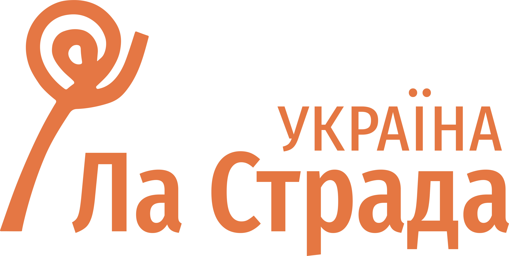
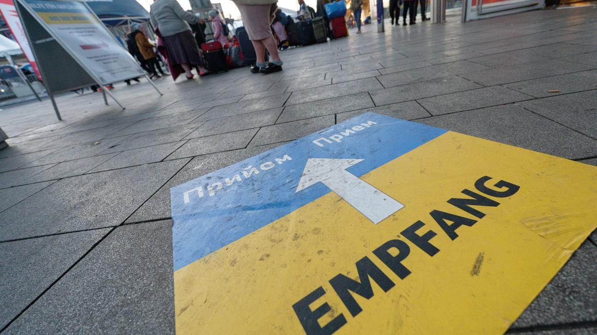
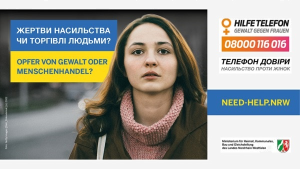
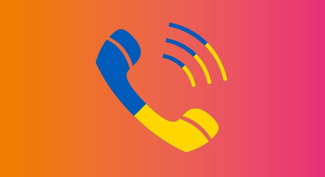
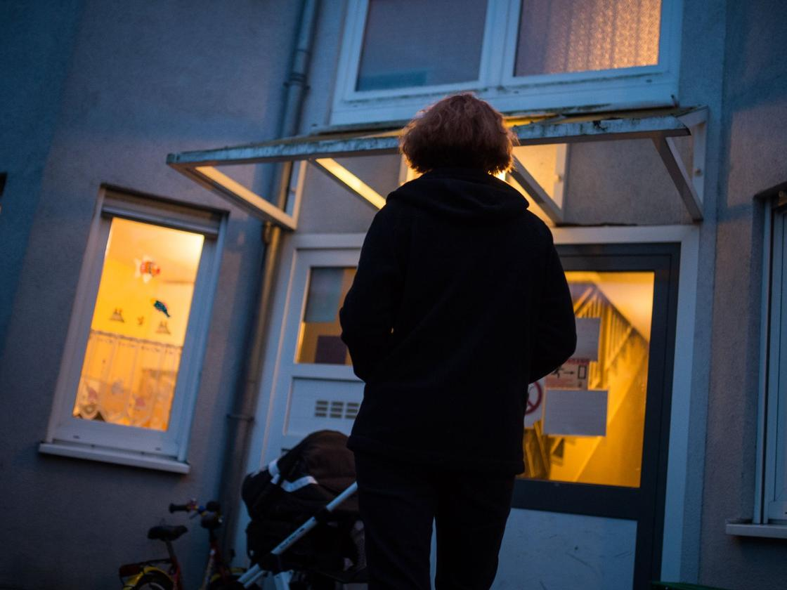
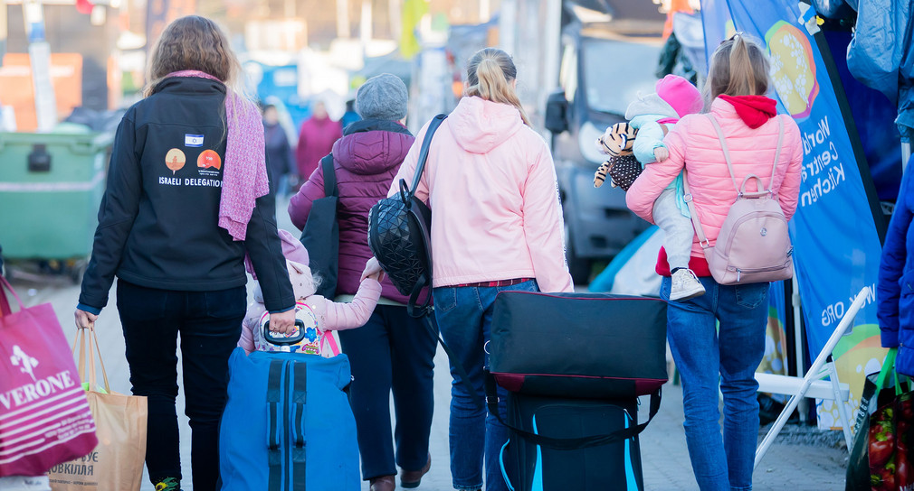
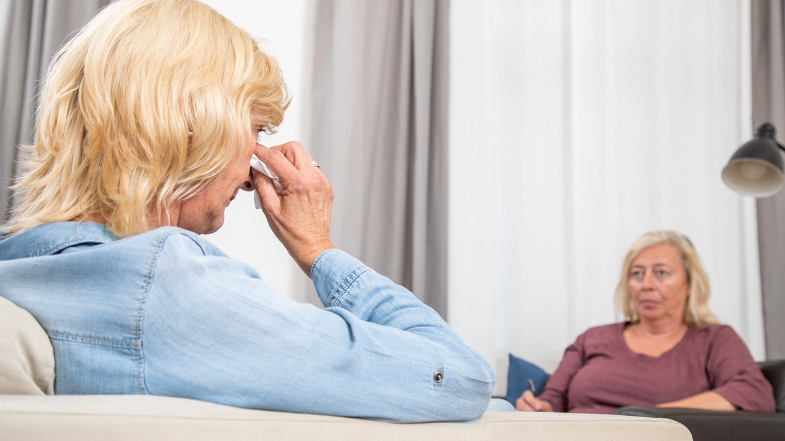
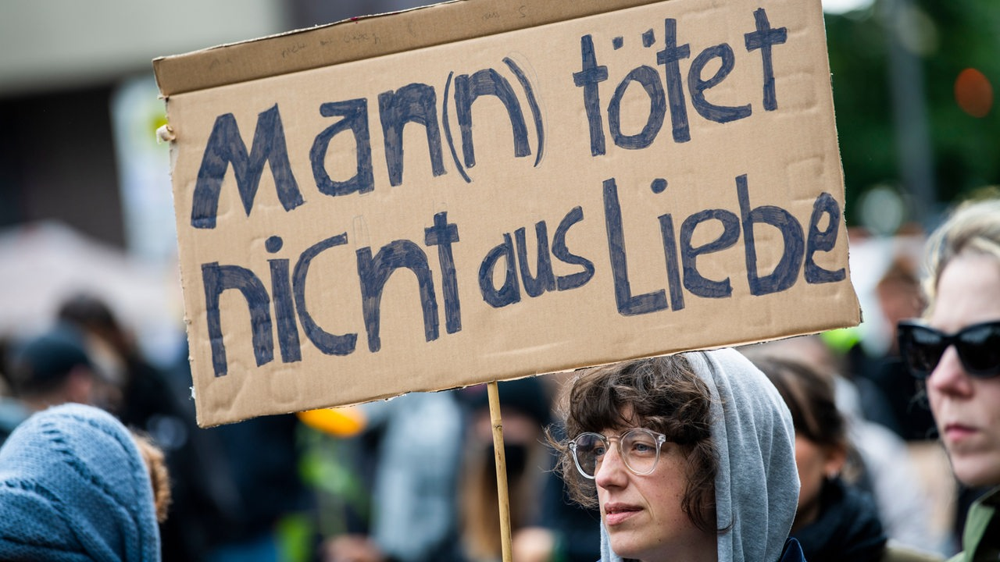

Drei Schritte: Wie bekämpft man häusliche Gewalt in Deutschland und warum
betrifft es uns Ukrainer?
„Ich fühlte, dass auch ich ein Mensch bin“, sagt Olena,
die von der Gewalt betroffene Frau, die gerettet wurde.
Von Mariia Tarasenko
Prolog: Paragraph 24
Nach Angaben des Bundestages, stieg die Zahl der Fälle häuslicher Gewalt in der
Bundesrepublik Deutschland im Jahr 2022 auf 240.547, was einem Anstieg von 8,4 Prozent gegenüber
dem Vorjahr 2021 entspricht. Seit dem 24. Februar 2022 haben etwa zwei Millionen ukrainische Bürger
vorübergehenden Schutz gemäß Paragraph 24 des
Aufenthaltsgesetzes erhalten.Es wurden viele Zahlen eingereicht, nicht wahr? Aber
wie diese ca. 240.000 und diese zwei Millionen miteinander verbunden sind, kann kein Computer wegen
des Datenmangels berechnen. Es geht nicht nur darum, wie viele ukrainische Betreffende die Statistik
der häuslichen Gewalt erhöht haben, und auch nicht um die Statistik im Allgemeinen: es geht um
Menschen, die sich in einem anderen Land befinden und hier um Hilfe bitten. Nicht manchmal beherrschen
diese Menschen keine Deutsche Sprache und wissen nicht, wo sie sich hinwenden sollen.

„Viele Familien sind ins Ausland gezogen, oft auch Familien mit Männern. Die Gewalt,
die bereits in der Ukraine stattgefunden hat, geht weiter, aber hier weiß die Frau nicht,
wohin sie sich wenden soll; ein noch größeres Problem ist die Sprachbarriere.
Es ist nicht bekannt, ob die Mitarbeiter*innen dieser Behörde Ukrainisch oder Russisch sprechen“,
erklärt Aliona Kryvuliak, des Departments für nationale Hotlines und soziale Unterstützung der
Hilfsorganisation 'La Strada-Ukraine'..

„Oft wenden sich Menschen an uns mit einem Problem, das bereits in der Ukraine aufgetreten
ist, aber manchmal wird der Stress zum Faktor, der zu Vorfällen häuslicher Gewalt in Deutschland führt“
, würde Claudia Meise, Mitarbeiter*in der Frauenberatungsstelle in Göttingen, zustimmen.
Soweit die Erfahrung der deutschen Behörden mit der von der Gewalt betroffene ukrainischen Bürgerinnen
zunimmt, können wir uns ein Netzwerk vorstellen, das häuslicher Gewalt entgegenwirkt und sie verhindert.
Warum sollte man keine Angst haben, über diese Erfahrung zu berichten? Wir klären das anhand der Geschichte
von Olena und den Kommentaren der Sozialdienste in Niedersachsen. Wohin kann man sich wenden? Wir geben
umfassende und schrittweise Antworten: von der zugänglichen Option bis hin zu einer, die potenziell Ihr
Leben verändern könnte.
Kapitel Eins: Hilfetelefon
Es lohnt sich, einige Schritte zurückzugehen und sich mit dem Mechanismus zum Schutz von Betroffenen
der häuslichen Gewalt vertraut zu machen, der in den letzten Jahren in Deutschland entwickelt wurde.
Im Herbst 2017 wurde hier die Übereinkommen
des Europarats zur Verhütung und Bekämpfung von Gewalt gegen Frauen und häuslicher Gewalt
ratifiziert, und Anfang 2018 trat sie in Kraft. Unter anderem bedeutet dies, dass die
Bundesrepublik Deutschland die Bestimmungen zum Schutz von Opfern häuslicher Gewalt umsetzen
muss, wie sie in dem internationalen Dokument vorgesehen sind. Das Folgende umfasst vier Hauptbereiche:
Prävention von häuslicher Gewalt, Schutz und Unterstützung von Betroffenen, strafrechtliche
Verfolgung von Tätern und eine umfassende Politik. Im Rahmen dieses Materials konzentrieren
wir uns darauf, welche Maßnahmen Deutschland bezüglich des zweiten Aspekts im Kampf gegen das
Problem ergreift: nämlich wohin sich eine betroffene Person wenden kann und welche Hilfe sie
erhalten wird.
Die erste Option ist das Hilfetelefon. In Deutschland heißt es
„Gewalt gegen Frauen“ und hat die Nummer 116 016. Antworten auf die häufigsten
Fragen finden Sie auf der Startseite dieser Website. Ebenso wichtig ist, dass diese Beratungsstelle
bei der häuslichen Gewalt absolut anonym funktioniert und auf achtzehn Sprachen verfügbar ist,
darunter auch auf Ukrainisch.
Der Pressedienst des Hilfetelefons berichtet, dass im Jahr 2022 184 Konsultationen auf Ukrainisch
stattgefunden haben. Petra Söchting, die Leiterin des Hilfetelefons „Gewalt gegen Frauen“, erklärt,
dass nur der Sprachindikator angibt, wie viele ukrainische Frauen Hilfe beantragt haben

„Unsere Hauptmerkmale sind Vertraulichkeit und Anonymität, daher fragen
wir nicht nach der Staatsbürgerschaft. Wenn die Ratsuchende uns ihre Nationalität nicht mitteilt,
erfahren wir das gar nicht.“
Dennoch weisen Mitarbeiter*innen darauf hin, dass die ukrainische Bürgerinnen oft das Hilfetelefon
in Fällen von Gewalt kontaktieren, tatsächlich jedoch Beratung in Fragen des Asyls benötigen.
Obwohl die Berater*innen des Hilfetelefons spezielle Fähigkeiten im Umgang mit Fluchterfahrungen
haben, vermitteln sie Personen, die nicht Opfer häuslicher Gewalt sind, an andere Organisationen.
Zur gleichen Zeit berichtet Viktoria Kutylowa, stellvertretende Direktorin des städtischen Zentrums
für Geschlechtergleichstellung und Gewaltprävention in Kiew, dass viele Opfer aus dem Ausland anrufen
und um Unterstützung in der Ukraine bitten. Aber warum passiert das? Nur wegen des Mangels der Information?
„Manchmal fürchten sich die betroffenen Frauen davor, die Nummern 110 oder 112
in einem anderen Land anzurufen, weil die Täter oft manipulieren, indem sie sagen:
«Du wirst jetzt anrufen — und dann? Du bist hier niemand, du bist in einem fremden Land,
sie werden dich abschieben, und wohin gehst du, nach Mariupol?»“, erklärt Aliona Kryvuliak.
Oft besteht auch die Angst, dass das Jugendamt die Kinder wegnehmen oder der Betroffenen das
Sorgerecht entziehen könnte. Solche veralteten Vorstellungen hindern Frauen oft daran,
entschlossen die Änderungen vorzunehmen
„Tatsächlich wollen sie (die Mitarbeiter*innen des Jugendamts), dass die Kinder in der Familie bleiben:
egal in deutschen oder in ukrainischen Familien. Trotz der Ängste, die sowohl Deutsche als auch Ukrainer
haben, wird die Frage, ob Kinder wegzunehmen sind,
nur bei systematischen Misshandlungen oder aufgrund des eigenen Wunsches dieser Kinder aufkommen“ ,
ergänzt Claudia Meise, Mitarbeiterin der Frauenberatungsstelle in Göttingen.
Es ist zu ergänzen, dass eine Abschiebung in eine Region, in der Krieg herrscht, nur dann in Frage kommt, wenn die
betreffende Person ein schweres Verbrechen begangen hat: Vergewaltigung oder Ermordung.
Das Hilfetelefon ist wirklich die erreichbarste Option, den ein Opfer auch dann unternehmen kann, wenn es
noch nicht bereit ist, den Vorfall bei der Polizei zu melden oder entschlossene Maßnahmen zu ergreifen.
Es stellt sich schnell heraus, dass der Telefondienst tatsächlich so funktioniert, wie versprochen. Hier
gibt es kein „Ihr Anruf ist uns wichtig, bitte bleiben Sie in der Leitung“. Die Berater*innen antworten
innerhalb weniger Sekunden, und die Dolmetscher*innen treten genauso schnell in das Gespräch ein. Es
besteht kein Bedarf, sich zu beeilen oder nur Sachverhalte zu melden, um die Mitarbeiter*innen nicht zu verzögern.
Sie sind auch nicht verpflichtet, die Ratschläge zu befolgen, die ihnen gegeben wurden, oder sich anderweitig zu wenden.

Die Leiterin des Hilfetelefons, Petra Söchting, erklärt:
„Wir haben drei wesentliche Aufgaben: wir machen Erstberatung, wir führen
Kriseninterventionen durch, wenn Frauen sich hier in akuten Krisen melden. Schließlich,
wenn die Frau es wünscht,
vermitteln wir sie für die langfristige Unterstützung an Einrichtungen vor Ort weiter“.
Das Konzept der „Krisenintervention“ hat keine offensichtliche Handlungsanleitung. Laut
Frau Petra Söchting ist es sehr wichtig, dass keine automatischen Meldungen an die Polizei oder
andere Organisationen erfolgen. Wenn die Frau nicht darum bittet, bedeutet das Wort „Intervention“
nur den Versuch, die Betroffenen psychisch zu stabilisieren. In einer Situation, in der eine
Person ihren Standort meldet und um weitere Unterstützung bittet,
haben Mitarbeiter*innen die Möglichkeit, die Polizei an den Ort zu rufen, wo die Gewalt stattfindet.
Im Großen und Ganzen besteht das Konzept einer solchen Organisation darin, nur die Informationen, keine
Ratschläge, bereitzustellen. „Fertige Lösungen“, die wie Ultimaten klingen,
erzeugen zusätzlichen Druck auf das Opfer, und deshalb wird niemand sagen: „Sie müssen sich vom Täter trennen“.
„Wir verfolgen den weiteren Weg der Frau nicht und wissen nicht, welche Maßnahmen sie nach dieser Beratung
ergreift. Wir erheben keine personenbezogenen Daten und legen keine Fallberichte an. In unseren Beratungen
sprechen viele Frauen zum ersten Mal über das, was sie erlebt haben. Unsere Beraterinnen können Informationen
geben und in jedem einzelnen Fall gemeinsam mit der Frau
überlegen, welche Unterstützung für sie am besten passt, welche nächsten Schritte sie gehen kann“,
sagt Frau Petra Söchting abschließend.
Kapitel Zwei: Frauenhaus
Gemäß der Übereinkommen des Europarats zur Verhütung
und Bekämpfung von Gewalt gegen Frauen und häuslicher Gewalt,
ist der Staat verpflichtet, den Opfern vor physischer, sexueller und
psychischer Gewalt die Schutz zu bieten. Es soll ein sicherer Raum sein,
den sie schnell und kostenlos erreichen können, und wo sie drei bis sechs
Monate bleiben dürfen. In Deutschland werden solche Zufluchtsstätten
Frauenhäuser genannt. Es ist besonders wichtig, die betroffene Person mit
der Unterkunft zu versorgen, die dem Täter nicht zugänglich ist. Aus diesem
Grund bleiben die Adressen der Frauenhäuser geheim: Unter solchen Bedingungen
muss das Opfer keine Angst vor der Verfolgung durch (Ex-) Partner haben.
Aber wie gelangt man in ein solches Frauenhaus?
Die Zugänglichkeit der Website ZIF
(Zentrale Informationsstelle Autonomer Frauenhäuser) ist überraschend.
Vor allem bietet die Plattform eine Anleitung zur Nutzung. Unten finden Sie
eine Karte mit ungefähren Standorten der Unterkünfte: Beim Überfahren mit der Maus
über das Symbol werden die Kontakte des Hauses angezeigt. Darüber hinaus sind
Frauenhäuser, je nachdem, ob das Haus das Opfer derzeit aufnehmen kann, einen
vorübergehenden Schutz mit anschließender Weiterleitung in einem anderen Ort bieten
kann oder nur telefonische Beratung zur Verfügung stellt, mit verschiedenen Farben
markiert. Die Website bietet auch einen Suchfilter, mit dem Sie ein Frauenhaus nach
Ihren Bedürfnissen auswählen können. Unter denen stehen: Bundesland und Suchradius,
die Möglichkeit Kinder mitzubringen, die von der Berater*innen gesprochene Sprachen,
und so weiter. Es sieht sehr ähnlich zu einer Buchungswebsite aus, auf der Sie auch
die Anzahl der Personen und zusätzliche Dienstleistungen auswählen können. Sieht
sehr einfach aus, oder?
Für alle Staaten, die
Istanbul-Konvention , ratifiziert haben, gelten gemeinsame Normen: Auf 10.000 Einwohner sollte
mindestens ein Platz in einem Frauenhaus vorhanden sein,
um die Bedürfnissen der Bürger zu erfüllen. Nach Angaben der Frauenrechtlerin Johanna Nelles im Interview mit
dem Spiegel:
, gibt es aktuell in Deutschland rund 5086 Plätze in Frauenhäusern. „Da besteht also ein
klares Defizit, kein Bundesland erreicht dieses Ziel“.
Kann es also sein, dass das Opfer in keinem Frauenhaus aufgenommen wird?

Ein persönliches Gespräch mit der Koordinatorin des Frauenhauses
in Wolfsburg, Sandra Beetz, half viele Details zu klären.
Die Mitarbeiterin des Frauenhauses betont:
„Wir finden immer eine Lösung. Wenn wir derzeit
keinen Platz anbieten können, suchen wir für die
Betroffenen Unterkünfte in anderen Einrichtungen. Die Frau darf auf keinen Fall beim Täter bleiben.“
Über das, was nicht auf dem Papier steht, sondern im Leben passiert, berichtet Olena
(der Name der Frau würde auf ethischen Gründen geändert),
eine Überlebende häuslicher Gewalt, die derzeit im Frauenhaus lebt:
„Die Nachbarn sagten, dass es keine ständigen Schreie geben sollte, sie machten Bemerkungen.
Meine Tochter, die schon vor dem Krieg hierher gekommen war, sagte auch, dass es nicht sein kann.
Angeblich wird der entsprechende Dienst kommen und sich um uns kümmern. Dann gab es einen Vorfall,
als ich die Polizei gegen meinen Mann rufen musste, weil er sich in einem unzurechnungsfähigen
Zustand befand. Die Polizei verbot ihm sofort, fünf Tage lang in unserer Wohnung zu bleiben. Und
auf diese Weise begann diese Geschichte: Da wir Kinder haben, wurde unser Fall sofort an das
Jugendamt weitergeleitet. Sie sind zu uns gekommen, aber beim ersten Mal wurden meinem Mann und
mir vorgeschlagen, uns zu versöhnen.
Also, waren die Mitarbeiter*innen nachsichtig.“
In Deutschland bedeutet ein Anruf bei der Polizei, dass die Organisationen,
über die in diesem Material gesprochen wird, die Kontaktdaten der Frau erhalten.
Es ist bemerkenswert, dass sie in der Lage sind, ihr einen Brief auf Ukrainisch
zu schicken und die Beratung zu bieten. Wie im Fall von Olena merken Nachbarn oft
die Situationen, die potenziell auf Gewalt hinweisen, und empfehlen, sich an die
Polizei zu wenden. Manchmal tun sie dies selbst. Olena kannte diese Möglichkeit,
daher verstand sie, dass sie selbst die Initiative ergreifen musste.
„Dann passierte alles wieder, und die Mitarbeiter*innen bewerteten die Kondition
meines Mannes im nüchternen Zustand als für die Kinder verheerend. Sie wurden später
oft gefragt, wie sich der Vater benimmt. Danach haben wir eine Familienhelferin
bekommen, die ein paar Mal pro Woche zu uns gekommen ist. Nach drei Monaten hat
sie mir und den Kindern vorgeschlagen, sich von meinem Mann zu trennen. Ich stimmte
zu, vorübergehend hierher, in das Frauenhaus, wo sie später einen Platz für uns
gefunden haben, zu ziehen“. .
Was kommt als nächstes? Frauenhäuser sind kein einzelnes Angebot. Es ist die
Arbeit mit dem Opfer während des gesamten Zeitraums, den es im Frauenhaus verbringt,
und sogar darüber hinaus. Aus den Geschichten der Koordinator*innen der Frauenhäuser wird
klar: Hier wird sich bewusst gemacht, wie schwer es ist, ein völlig unabhängiges Leben
zu beginnen. Die Besonderheit psychischer Gewalt besteht darin, dass die Würde einer Person
und deren Selbstwertgefühl stark von dem Täter beeinflusst werden kann.
Im Frauenhaus wird immer gesagt: „Du kannst alles allein schaffen.“ Aber die ersten
Schritte, sagt Sandra Beetz, machen die Mitarbeiter*innen des Frauenhauses gemeinsam mit
dem Opfer. In vielen Fällen hatte die Person nie ein eigenes Einkommen und folglich auch
kein Bankkonto:
„Also gehen wir gemeinsam zur Bank, eröffnen ein Konto, dann wenden wir
uns an das Jobcenter, um Sozialleistungen zu erhalten, kümmern uns um die Krankenversicherung.
Unsere Ziel ist es, für das Opfer und ihre Kinder eine eigene Wohnung zu finden.“
Darauf hofft auch die Familie von Olena.

„Das ist unser vorrangiges Ziel,“ erklärt die Frau,
„denn hier im Frauenhaus können wir nicht
für immer bleiben. Die Mitarbeiter*innen helfen bei der Ausfüllung zahlreicher Formulare für
das Jobcenter. Jetzt warten wir darauf, dass alles geklärt wird: Entweder finden wir eine
Wohnung, oder mein Mann überlässt unsere eigene. Hier fühlen wir uns sicher und wohl: Es gibt
eine Küche und ein Badezimmer, es gibt spezielle Spielzimmer für die Kinder, es gibt
pädagogische Bücher und Spiele.
Ich weiß, dass mein Mann nicht einfach zu uns und den Kindern kommen kann, ohne Verabredung.“
Aber auf die Frage, ob es „unglückliche“ Fälle gibt, antworten die Mitarbeiter*innen,
dass manchmal das Opfer zu dem Täter zurückkehrt oder sogar einen neuen findet. Im
Fall des Hilfetelefons entscheidet die Person selbst, welche Informationen sie teilen
möchte: wenn gewünscht, kann man sogar seinen Namen ändern oder nicht angeben. Im
Frauenhaus kommen Sie als Person an, in Ihrem Körper, mit Ihren Schmerzen und Wunden.
Hier werden Ihre Flügel geheilt, aber nur Sie können die Entscheidung treffen, sie
auszubreiten. Dafür sind oft Monate und Jahre Psychotherapie erforderlich.
Kapitel Drei: Dialog
Lassen wir uns über eine weitere Möglichkeit sprechen, Hilfe zu erhalten. Die Zusammenarbeit
zwischen dem Migrationszentrum und verschiedenen Beratungsstellen für Ukrainer*innen ist ein
flexibles und intelligentes Netzwerk, das bereit ist, Personen, die ihre ersten unsicheren
Schritte in Deutschland unternehmen, abzusichern.
„Dieses Mal sind wir viel besser vorbereitet als leider im Fall von Syrien“,
sagen die deutschen Sozialdienste.
Seit dem Beginn des vollen Eingreifens Russlands in die Ukraine gab es in allen Rathäusern
reichlich ukrainischsprachige Poster für Frauen und Kinder / Jugendliche, die von häuslicher
Gewalt betroffen sind. Dies ist sozusagen ein Starterpaket: Informationen darüber, dass Hilfe
verfügbar ist. Ukrainerinnen begannen nicht sofort, es zu nutzen,
aber mit der Zeit, berichten Mitarbeiter*innen der Beratungsstellen für Frauen, werden es immer mehr.

Es geht um die Beratungsstelle, die in Ihrer Region zu finden ist, aber auch um das gesamte
System von Konzepten und Prinzipien. Die Haupttätigkeitsbereiche hier sind psychologische
und rechtliche Hilfe. Je nach den Möglichkeiten jeder einzelnen Einrichtung können folgende
Angebote gemacht werden: Gruppentherapie, Arbeit mit einem Psychologen oder Therapeuten,
Familientherapie, Rechtsberatung, verschiedene thematische Veranstaltungen. Dies wird an Frauen,
die gerade Gewalt erleben oder die in der Vergangenheit damit betroffen waren, orientiert.
Ein anderer Dienst ist die sogenannte „Krisenintervention“, die die Beratung von Frauen in
schwierigen, insbesondere psychologischen Situationen beinhaltet. Jeder solche Telefondienst
arbeitet nur mit den Betroffenen in ihrer eigenen Region, und genau nach diesem Prinzip wird
die Finanzierung der Beratungszentren durchgeführt.
In diesem Kapitel sind wir bewaffnet mit dem Wissen, dass die Wartezeit bei Psycholog*innen ziemlich
lang sein kann. Mitarbeiter*innen von Frauenhäusern erläutern: Ja, mit dem Verständnis, was zu tun,
wohin zu gehen, was mit den Kindern passieren wird, wie man sich vom Täter verteidigen kann, helfen
sie. Claudia Meise von der Frauenberatungsstelle in Göttingen versichert, dass psychologische
Unterstützung auch zur Verfügung steht. Wenn eine betroffene Person das Zentrum anruft, kann ihr
eine Beratung online oder persönlich zugewiesen werden, um die Richtungen für die zukünftige Arbeit
zu klären. Ebenso kann ein Dolmetscher*innen in jeder Sprache
zum Gespräch hinzugezogen werden. Im niedersächsischen Ministerium gibt es auch die Abteilung
„Wörte helfen Frauen“
die über qualifizierte Übersetzer mit entsprechendem Wortschatz verfügt.
„Jeder Frau, die sich an uns wendet, bieten wir zehn kostenlose Beratungsgespräche mit einem Psychologen an“,
erklärt Frau Meise.
„Diese Möglichkeit besteht neben anderen: Aufnahme in ein Krankenhaus, Erhebung
der Anklage gegen den Täter, Beratung im Migrationszentrum aufgrund eines unklaren Status in Deutschland,
Hilfe bei Suchtproblemen...
Außerdem ist unsere Hauptaufgabe natürlich die rechtliche Beratung“
, erklärt Claudia Meise.
Die betroffenen ukrainischen Bürgerinnen sind von verschiedene Schmerzen belastet: „Der Stress
nach dem Umzug hat zu Gewalt in der Familie geführt“, „Mein Mann begann zu trinken und nicht nur mich,
sondern auch die Kinder zu schlagen“,
„Ich habe Vergewaltigung durch den Krieg erlebt, und ich kann niemandem davon erzählen“...

Alle Mitarbeiter*innen des Beratungszentrums haben die entsprechende Ausbildung,
die es ihnen ermöglicht, professionelle psychologische Hilfe zu besorgen. Der Hauptzweck
dieser Tätigkeit ist es, in Fällen akuten Schmerzes zu helfen und den Zustand der Frau
zu stabilisieren. Natürlich endet die Arbeit an dem Problem damit nicht, also wenn alle
zehn kostenlosen Beratungsgespräche vorbei sind, suchen die Mitarbeiter*innen für die
Betroffenen die unabhängigen Psychologen oder Therapeuten, und in diesem Stadium kommt
sie in die allgemeine Warteschlange. Hier, wie bereits erwähnt, kann man monatelang oder
jahrelang warten. Daher kann man sagen, dass das Beratungszentrum für Opfer häuslicher
Gewalt ein Dienst für Notfallversorgung ist, ähnlich einem herkömmlichen Rettungsdienst.
Hier wird die Blutung gestoppt, Schmerzmittel verabreicht, aber die weiterführende
therapeutische Behandlung liegt außerhalb der Möglichkeiten des Rettungsdienstes.
„Unsere Mitarbeiter*innen sind sehr erfahren: Wenn es Symptome von Traumatisierung
gibt, bieten wir der Person Therapeuten an, die in einer solchen Situation hilfreich
sein können. Natürlich muss man lange warten, außerdem beherrschen nicht alle unsere
Klienten Deutsch oder Englisch. In solchen Fällen helfen wir der Frau auch nach
zehn Beratungsgesprächen weiter, wenn auch längere Zeiträume dazwischen nehmen. Wir
lassen niemanden einfach hängen, weil die für sie reservierten zehn Stunden verbraucht
sind“,
sagt Claudia Meise.
Das Netzwerk der Sozialdienste funktioniert so, dass eine Person sich
sogar an falsche Organisation wenden kann, aber sie wird weitergeleitet,
informiert, beraten und versorgt. Auf die Frage, ob es vorkommt, dass einer
Frau nicht zu helfen ist, kommt jedes Mal dieselbe Antwort: „Wir finden immer einen Weg“.
Und auf diesem Weg können Hindernisse auftreten: finanzielle Abhängigkeit vom Täter,
psychische Trauma, Wohnungs- oder Flüchtlingsstatus in Deutschland, Sprachbarrieren.
Hindernisse, die das Netzwerk dazu zwingen, sich zu verbessern und zu entwickeln, und
die niemals eine Sackgasse bedeuten.
„Es lohnt sich nicht, Angst zu haben, mutig zu sein — das ist notwendig“,
rät Olena denjenigen, die diesen Text lesen.
„Angesichts der Fremdsprache...
Manchmal reicht ein Blick, und die Leute im Frauenhaus werden dich verstehen.
Manchmal berührt dich eine Mitarbeiter*innen am Arm, und es wird der Frau, die
von Gewalt betroffen ist, leichter. Man muss sich ändern, man muss mutig sein,
weil dies ein demokratisches Land ist, weil hier jeder Mensch geschätzt wird.“